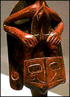

Raven lived in the dark world. He was sly, wise, greedy, and meddlesome. And he could change his form to suit his own needs. Raven decided to find out about daylight, so he turned into a hemlock needle and dropped into a freshwater spring. When the river chief's daughter came to the spring to drink, Raven floated into her cup, and she swallowed him. In due time, Raven was born as the grandson of the river chief.
Raven grew very fast and his grandfather adored him, even though he threw tantrums and his eyes looked a little like a raven's. When he screamed, his doting grandfather let him play with the Moon Box. He opened the box and the moon escaped into the sky. When Raven wailed again, his grandfather let him play with the Box of Daylight. As soon as the box was in his possession, Raven changed back into a bird and flew through the smoke hole and disappeared into the darkness.
Raven brought the box to the people and opened it slightly, allowing a few streaks of daylight to escape. But they did not believe he actually had daylight. Angered by the people's skepticism, he threw open the box and flooded the world with the bright light of day.
During the 18th century, Europeans arrived on the Pacific Coast and established fur-trading posts. Soon, Episcopal and Methodist missionaries arrived to convert the Indians. Their conversion to Christianity undermined traditional Haida culture, and disease and alcohol brought by the outsiders decimated the population. Today, small groups of Haida Indians live in the Masset and Skidgate communities in Canada and at Hydaburg on Prince of Wales Island in Alaska.
Raven
Raven is one of the most popular characters in Haida mythology. He
is said to have created the earth when he tired of flying over a
world covered with water. Landforms, tides, the habits of certain
animals - all those and more are credited to Raven. In many of the
stories, such as the story of daylight, the trickster Raven
changes his form.
Raven Rattles
The Haida have long been gif ted woodworkers. The men built great
houses and the most prized maritime boats along the coast. Haida
artists carved totem poles, storage boxes, utensils, and rattles
in the form of ravens, among other art objects.
Raven rattles take their name from their ravenlike shape. Today, their original purpose and the exact meaning of their complex decoration is no longer known. The first raven rattles may have been powerful instruments used by religious specialists called shamans. Twentieth-century Haida, however, say the rattles were the instruments of dancing chiefs, part of the elaborate REGALIA they wore for a dance to greet canoes from other villages. With his knees slightly bent and his legs spread, the chief jumped on both feet to the time of a rhythmic song beat, vibrating the rattle while dancing. Raven rattles are now used only for special occasions.
Chief's Rattle
Raven's head thrusts upward and his chest puffs out, forming the body of the rattle. His wings sweep downward along his sides. The repeated vertical lines of Raven's beak, mouth, and his diamond-shaped eye emphasize the proud upward thrust of his head. INLAID shell forms his shiny opalescent eye. Most known raven rattles look much like this one, but they have the additional detail of a small box of daylight held in his beak.
Several birds are evident in this wooden rattle. On Raven's belly is the face of a rather large bird, carved in low RELIEF. The design, barely visible here, may depict a hawk or some other natural being. Another abstracted bird's head faces the rattle handle.
A reclining man rests his head on Raven's head. His long red arms wrap around his drawn-up knees. A long-billed bird bites the man's extended tongue. The meaning of this exchange is unknown, but may suggest the transference of power from one being to the other.
The complex linear design of this rattle is characteristic of Northwest Coast Indian art. Each form is tightly integrated into the puzzlelike composition. Strong contour lines define many of the forms, such as the brow, eye, nostril, and beak of Raven. These lines tie the complex imagery together, leading from one form to another to create a rhythmic composition.
The raven rattle was painted with black and bright colors that also structured the design. Over time, much of this pigment has worn away. However, traces of red paint are still visible on the reclining man's arms and on the mouth, cheek, and forehead of the large bird that is also Raven's chest.
2. This wooden rattle carved in the image of Raven is used by a chief of the Haida people during ceremonies. How would the chief hold the rattle? Is there a handle? Where?
3. Did the artist who carved this rattle make a simple design or a complicated one? The five different figures that make up this rattle fit together like pieces of a puzzle. Imagine that you have taken this puzzle apart. Would you still be able to identify the figures if they were not attached to one another? If you thought this was a simple design, has your answer changed? Why or why not?
4. GEOMETRIC SHAPES are shapes that come from simple geometry - for example, the circle, square, triangle, and rectangle. ORGANIC SHAPES are irregular shapes that appear in nature. Are the shapes that make up this sculpture geometric or organic? (Organic.) Now consider the lines on the sculpture that decorate the organic shapes. Do these lines form organic or geometric shapes? (Geometric.) How has the artist integrated these two different kinds of shapes on this sculpture? (The LINEAR geometric decorations are placed so that they conform to the organic shapes on which they appear.)
5. ADDITIVE
SCULPTURE is sculpture made by building up a form by molding
or
SUBTRACTIVE SCULPTURE is made by
removing unwanted material from a mass, such as wood or marble. Is
the Chief's Rattle an example of additive or subtractive
sculpture? (Subtractive.) What makes you think so?
(Evidence of the wood being carved is visible in the
decorations on the sculpture. Parts are not visibly joined
together; they appear to have been carved out of one mass.)
How could you make an additive sculpture of wood? (By gluing
or nailing pieces of wood together.)
2. What other kinds of rattles can you think of? What are they used for? (Baby rattles are used to amuse and soothe. Maracas or other rattles are used to mark rhythm in music. A rattlesnake uses a rattle to issue a warning.) How might a Haida chief use this rattle? (The rattle's original purpose is unknown; however some Haida chiefs used rattles like this one in dances to greet canoes from other villages.)
3. Raven is one of the most popular characters in Haida mythology. Can you think of other animal characters that appear frequently in stories that you have heard? (The wolf in stories such as the Three Little Pigs, Little Red Riding Hood, Peter and the Wolf. Anansi the Spider is a popular character in West African folktales. Many stories have been written about the mythical unicorn.) Which other works of art in this image set represent animals in mythology? (The Antelope Headdress from Mali, image 6; Lakota Woman's Dress with representation of a turtle, image 19; New Ireland Malagan Pole with the wild pig, image 20; the Chinese Dragon Robe, image 22.)
4. The artist who carved the raven rattle painted it with black and bright
colors that helped to structure the design of the decorations on the rattle.
You may see some traces of the paint still on the rattle, but most of it has
worn away. Do you think it is possible to appreciate the rattle as a work of
art even though we can't see it as the artist originally intended it to appear?
(No right answer.) Challenge: You are the curator of a museum's collection of
American Indian art. Should you display this rattle as it is, without its
original painted colors, or should you attempt to repaint the rattle in order
to display it as the artist intended? (No right answer.)